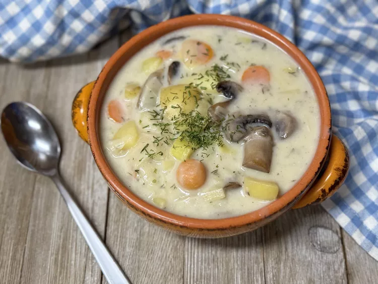

Return to Homepage
Russian Mushroom and Potato Soup

Photo source: Original source
Description
Russian Mushroom and Potato Soup is a comforting, hearty soup with tender potatoes and mushrooms simmered in a flavorful broth. It has a rich, earthy taste and a warm, satisfying texture, making it a perfect dish for a cozy meal, especially on cold days.
| Preparation Time |
25 mins |
| Cook Time |
25 mins |
| Total Time |
50 mins |
| Servings |
8 |
| Yield |
1 (9-inch) pie |
Ingredients
- 5 tablespoons butter, divided
- 2 leeks, chopped
- 2 large carrots, sliced
- 6 cups chicken broth
- 2 teaspoons dried dill weed
- 2 teaspoons salt
- ⅛ teaspoon ground black pepper
- 1 bay leaf
- 2 pounds potatoes, peeled and diced
- 1 pound fresh mushrooms, sliced
- 1 cup half-and-half
- ¼ cup all-purpose flour
- 1 sprig fresh dill weed, for garnish
Directions
- Melt 3 tablespoons butter in a large saucepan over medium heat. Mix in leeks and carrots, and cook 5 minutes. Pour in broth. Season with dill, salt, pepper, and bay leaf. Mix in potatoes, cover, and cook 20 minutes, or until potatoes are tender but firm. Remove and discard the bay leaf.
- Melt remaining butter in a skillet over medium heat. Sauté mushrooms until lightly browned, about 5 minutes. Stir mushrooms into the soup.
- Mix half-and-half and flour in a small bowl until smooth. Stir mixture into the soup to thicken. Garnish each bowl with fresh dill before serving.